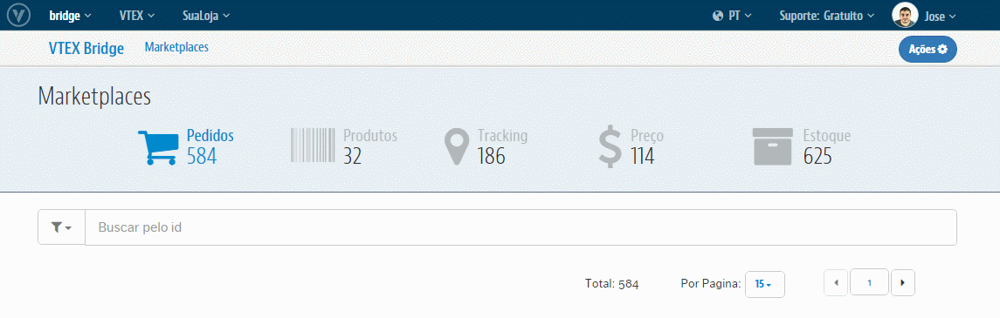

As movimentações que serão registrados no VETX Bridge serão apenas para aqueles Marketplaces que hoje integramos de forma ativa. Isto é, onde nós quem realizamos as exportações de Produtos, Preços e Estoque e/ou onde nós campturamos os Pedidos realizados no Marketplace. Os Marketplaces que temos hoje com a a integração ativa são: B2W, CNova, Rakuten, Buscapé e Walmart (apenas na parte de Protudos, Preços e Estoque. Pedidos o próprio Walmart quem insere na VTEX).
Alguns destes Marketplaces, como B2W, CNova, Rakuten e Buscapé, demandam de configurações específicas para podermos nos comunicar com os mesmos, além das configurações necessárias nos demais módulos da VTEX. Teremos em seguida, para cada Marketplace acima comentado, o que deve ser feito para ativar essas integrações:

Para cada um destes Parceiro temos as seguintes configurações:
E os outros Marketplaces, como configuro?
Para Marketplaces como Walmart, MercadoLivre, CSU e entre Lojas VTEX, não são necessárias essas configurações pelo VTEX Bridge. Para casa um desses temos as seguintes configurações necessárias: